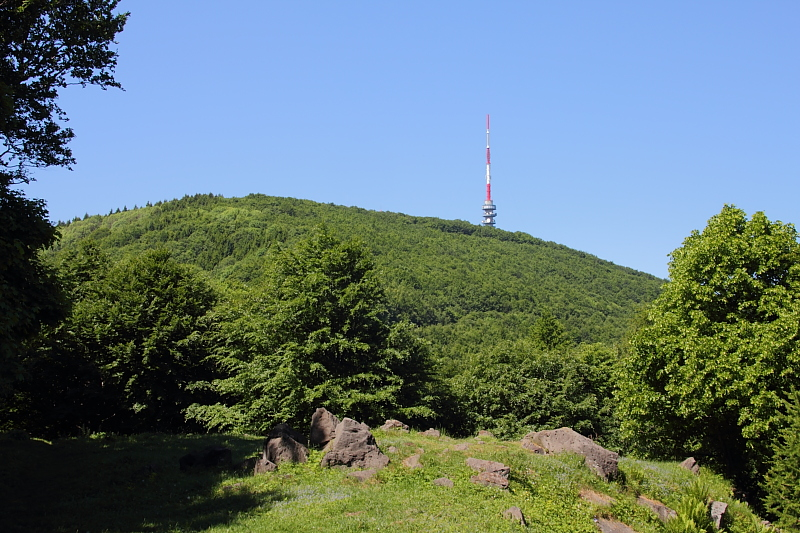
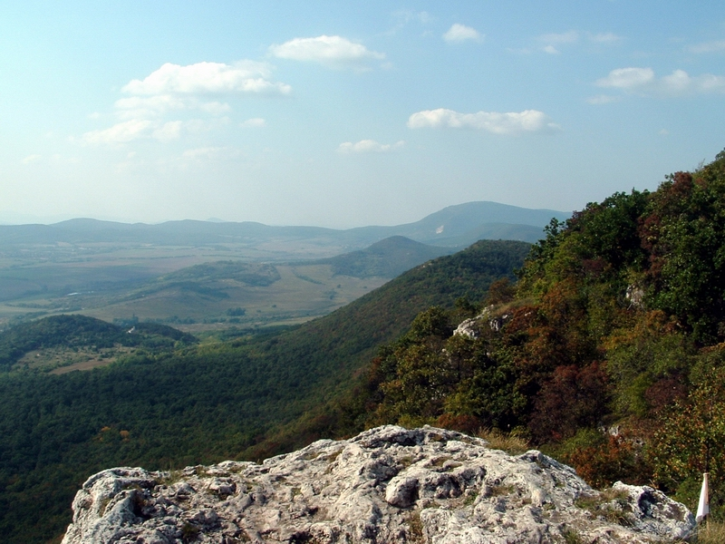
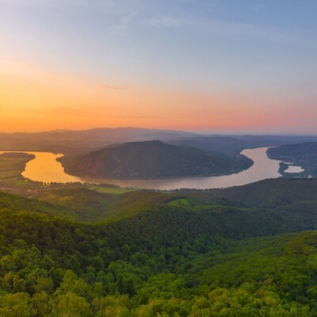

Kékestető
Az 1014 méter magas Kékestető Magyarország legmagasabb pontja. Csodálatos panorámával és erdei útvonalakkal várja a kirándulókat.
Ismerd meg hazánkat!
Válaszd ki a következő kalandod úti célját!
Felszerelés felfedezéseMagyarország változatos tájai minden túrázó számára tartogatnak izgalmas lehetőségeket. Legyen szó könnyű erdei sétáról vagy hosszabb hegyi túráról, biztosan megtalálod a kedvencedet.

Az 1014 méter magas Kékestető Magyarország legmagasabb pontja. Csodálatos panorámával és erdei útvonalakkal várja a kirándulókat.

A Pilis népszerű kirándulóhely, ahol sziklás kilátópontok, erdei ösvények és gyönyörű természeti látnivalók várnak.

A Dunakanyar a természet és a történelem különleges találkozása. A túrázók csodálatos kilátásban gyönyörködhetnek.